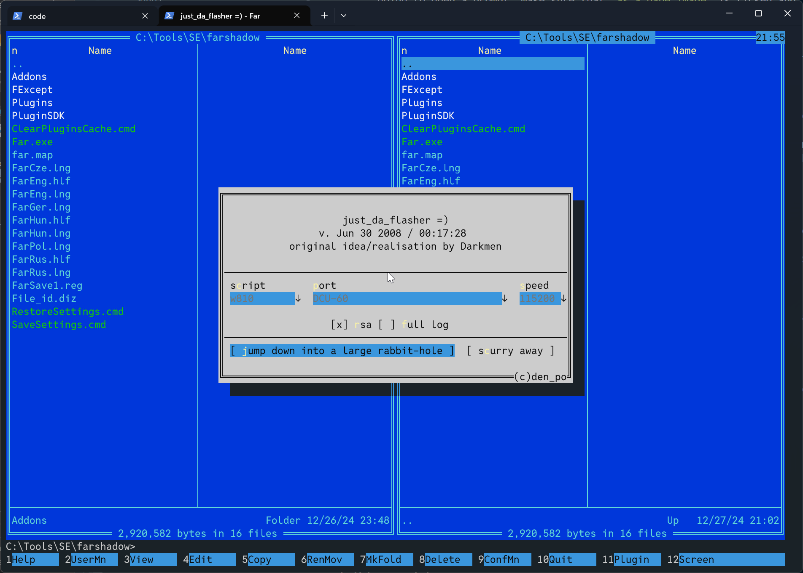
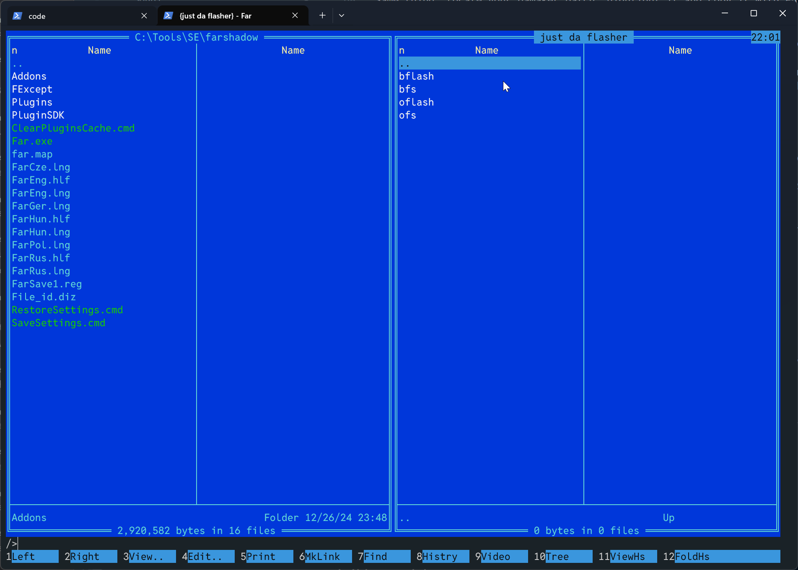
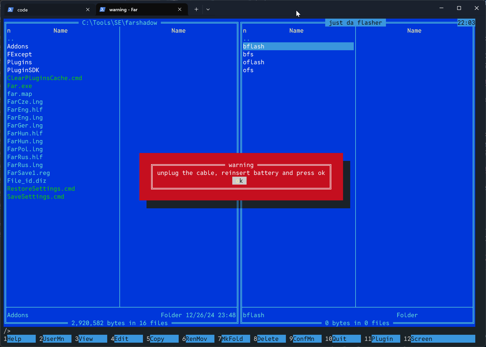
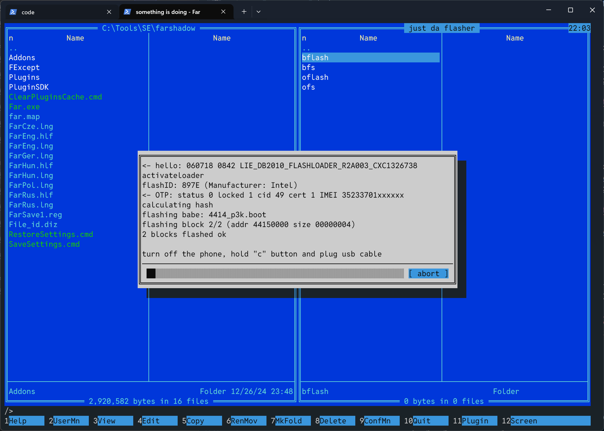
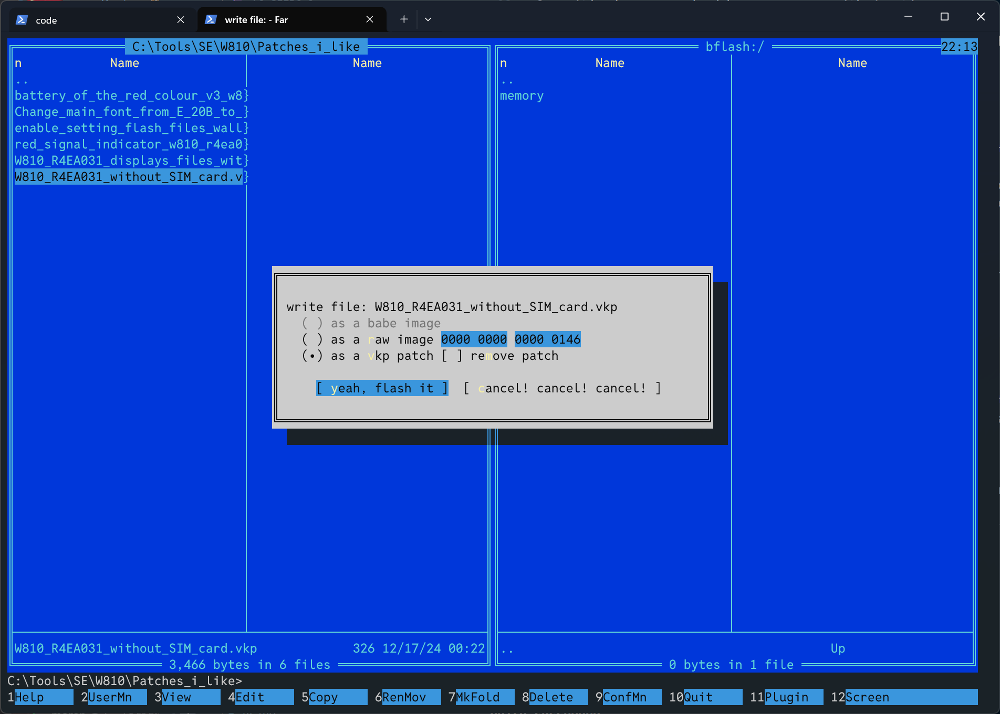
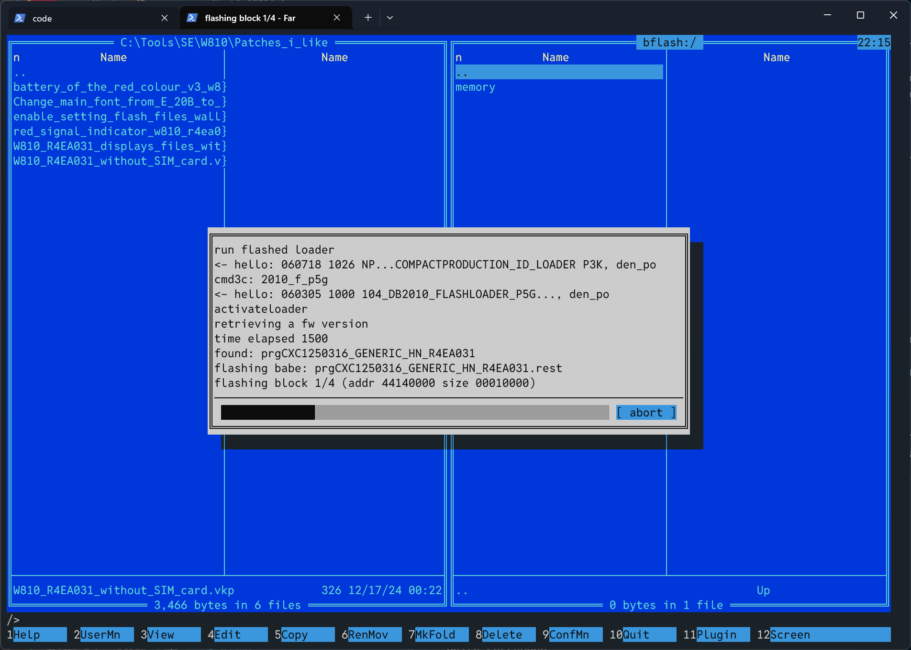

DB2010/DB2012 CID <= 49#
This is way faster than the DB2020 method below since there’s no need to flash a quick access patch, but there’s a few specific things to take note of.
First, open FAR Manager. Then, press F11 and select just da flasher. Select your phone model, for this tutorial it’s going to be a W810i, then press “jump down a large rabbit hole”.

The plugin will ask you to remove the battery, reseat it and then plug the phone to your computer while holding the C key.
Once it’s done, you should see a screen with 4 options:
bflash (“broken flash”, where you can flash patches)
bfs (“broken file system”, where you can browse all of the phone’s filesystem)
oflash (“official flash”, which lets you flash firmwares)
ofs (“official filesystem”, same thing as broken file system but with limitations)

Whenever you need to patch your phone, you’re going to access the bflash mode, which lets you “copy” patches over so they can be flashed.
Upon pressing bflash, jdf is going to flash a “broken” bootloader, which lets you tamper with the internal firmware. It then prompts you to remove the cable, reseat the battery and press enter:

After this screen, press ok and then plug the phone back in while holding the C key.

You should then be greeted by a folder with memory in it, to flash a patch, go to the opposite pane, select a .vkp patch and copy it over by pressing F5, then “Copy”, after which you should have this screen, make sure as a vkp patch is selected and press “yeah, flash it”. If you want to remove a patch that has already been applied, you just select it and tick the “remove patch” box.

Once you’re done flashing stuff to your phone. Select the two dots above memory, jdf should ask you “are you sure”, press yes.
It then asks you to restore a firmware. Select YES. It should restore your regular bootloader now as pictured here.

Why does it have to do that ? Well remember earlier, when entering bflash mode, jdf flashed a “broken” bootloader which cannot boot the phone but is solely here to tamper with the firmware.
Once that’s done, reseat the battery and restart your phone, it should work just fine with all the new patches.